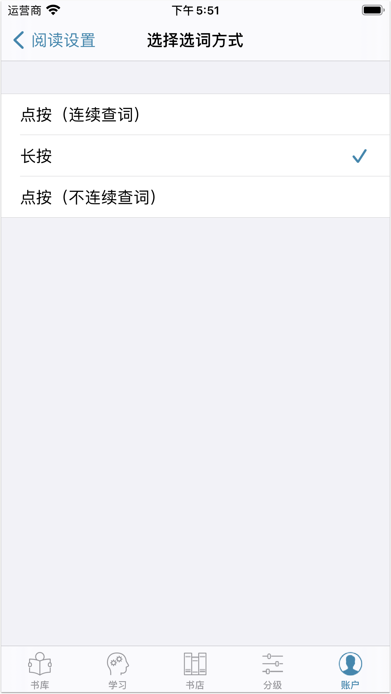
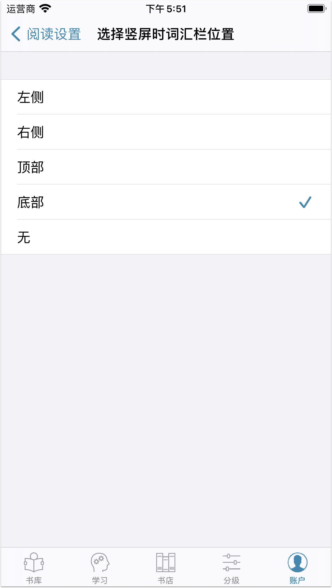
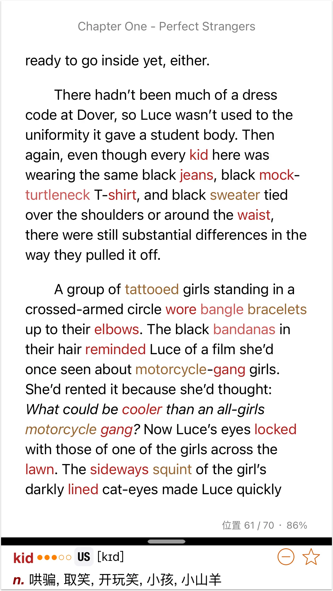
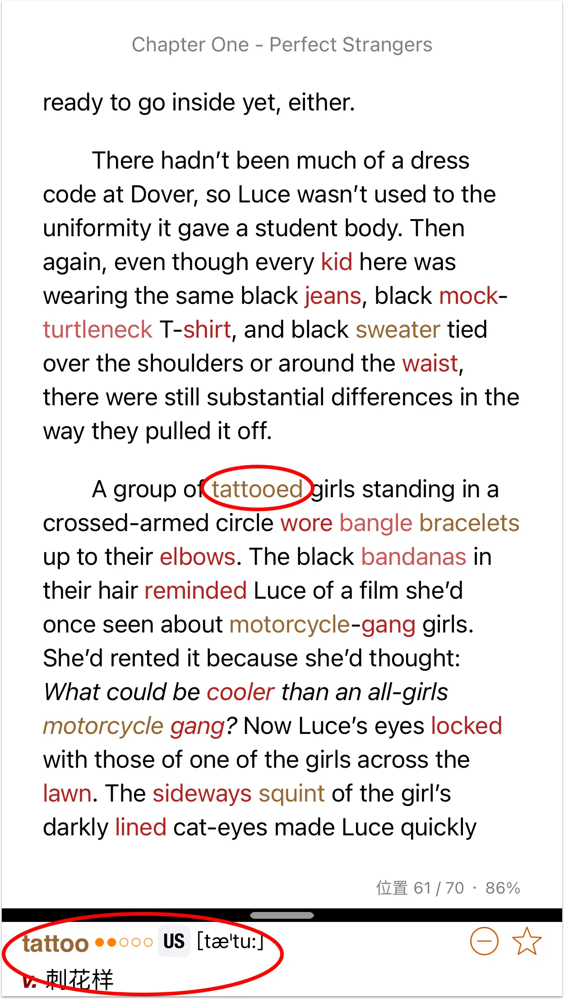
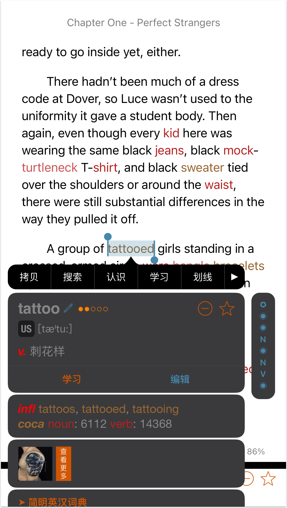
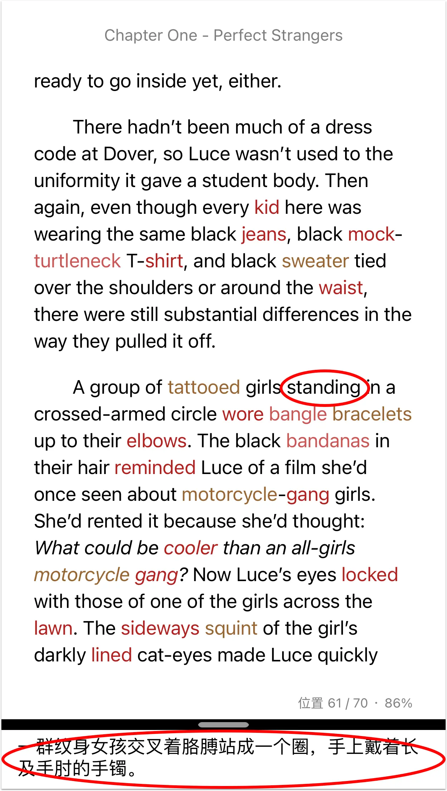
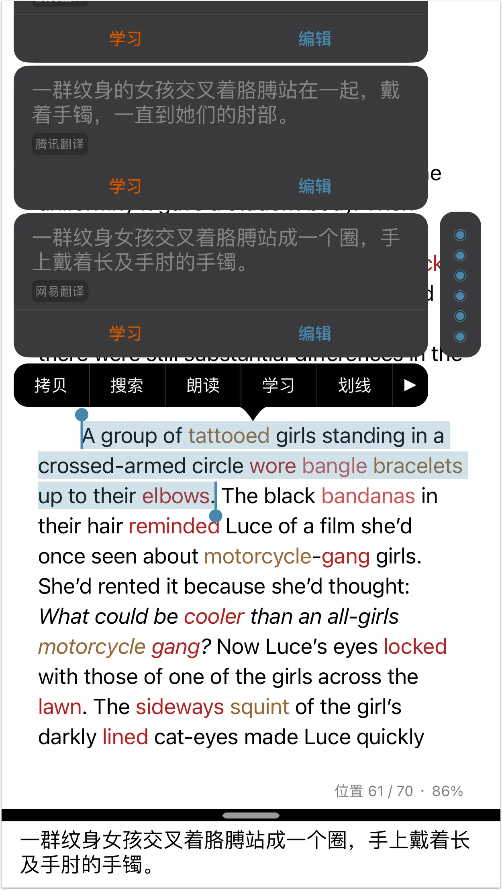

當您需要快速理解書籍內容，可按以下步驟設定閱讀參數進入速讀模式。設定後，您只需點按手勢即可快速查看單詞解釋或者句子中文翻譯，提升閱讀理解速度。
如何設定【速度模式】
- 依次點擊【設定】→【閱讀設定】→【閱讀標記設定】。選擇【標記詞頻】或【標記詞彙表】，選擇或導入您希望重點學習的單詞或生詞表。設定後，書中將自動高亮顯示這些單詞。
- 在【閱讀標記設定】頁面，點按【忽略詞彙表】→【管理詞彙表】，選擇或導入您已認識的單詞清單。設定後，我們將從第一步設定的詞彙表中過濾掉已認識的詞彙，不高亮。
- 在【閱讀設定】頁面，點按【閱讀時選詞管道】，將選詞管道設定為"長按"。

4.在【閱讀設定】頁面，點按【豎屏時詞彙欄位置】，選擇"底部"。

如何速讀
進入速度模式後，打開任意書籍，閱讀介面將變為：

在閱讀過程中，對於高亮的單詞，只需直接點按該單詞，底部的詞彙欄將顯示該單詞的解釋。比如，點按上面頁面的單詞"tattooed"，底部的詞彙欄將變為：

如果您設定了單詞自動發音，點按單詞也會自動朗讀該單詞。您也可以點按單詞音標觸發單詞朗讀。如果您想將該單詞加入生詞表中，點按底部的五角星圖標即可。如果您希望查看單詞更詳細的解釋，可以長按該單詞，或者點按底部詞彙欄。

若查看tattooed的解釋後，您仍不能理解句子的意思，您只需點按句中未高亮的單詞，比如上頁中的"standing"，底部的詞彙欄就會顯示句子的中文翻譯供你參攷。
注意：此處的句子翻譯由三方翻譯引擎利用自然語言處理技術提供，並非人工翻譯。

聽閱內寘多個翻譯引擎。詞彙欄會優先顯示第一個付費翻譯引擎的翻譯。若您未選擇付費翻譯引擎，就會顯示第一個免費翻譯引擎的翻譯。若您在【管理翻譯引擎】頁面選擇了多個翻譯引擎，您可以按兩下句子或者點按底部詞彙欄查看全部翻譯引擎的翻譯。
